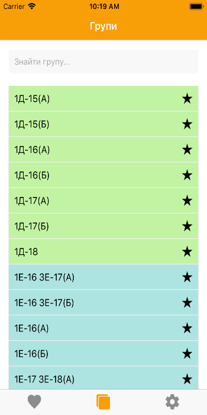
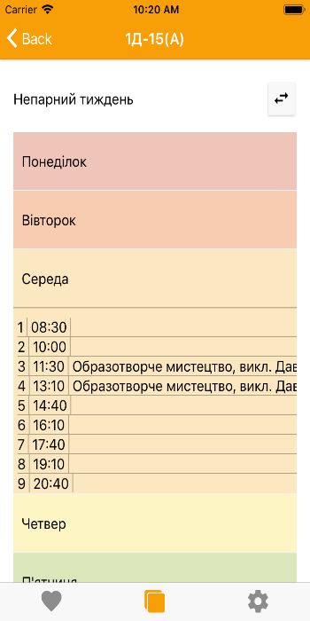
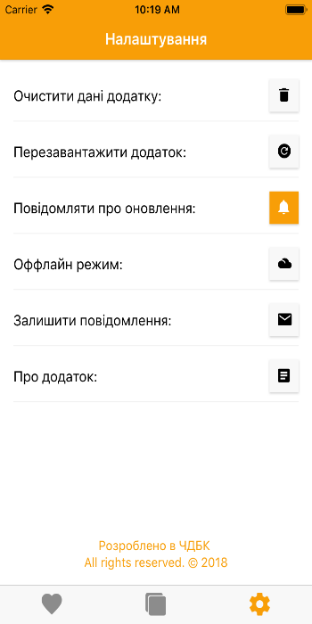
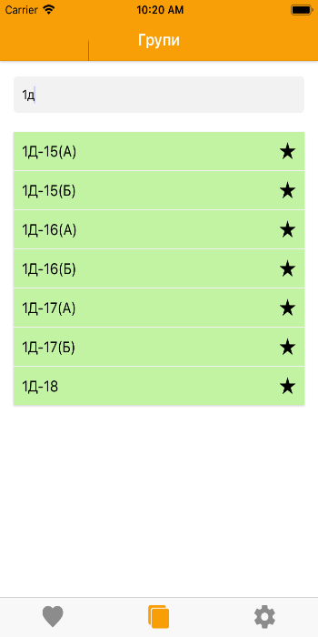

Weekler
Favorite is always at hand
Weekler — an application for educational institutions with support for replacements, "hot" updates and group searches.
Pluses:
* convenience and speed;
* relevant for both students and parents;
* instant updating of the timetable;
* system of selected groups.


WeeklerContact UsFacebook